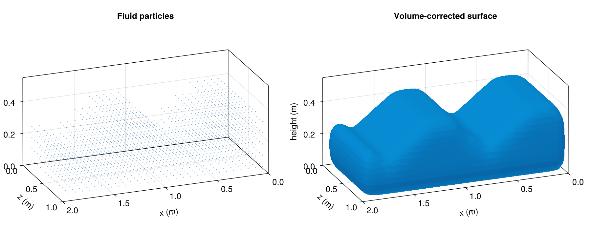
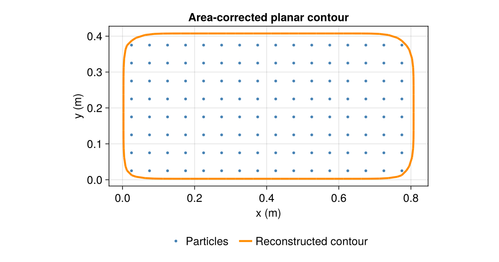
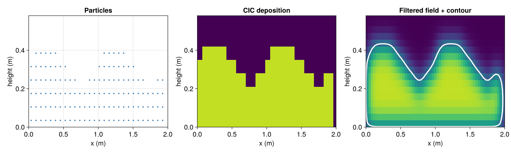

Surface Reconstruction
For two- and three-dimensional simulations, a continuous free surface can be reconstructed from the fluid particles with SurfaceReconstruction, either directly from particle snapshots, systems, solutions, or initial conditions with reconstruct_surface, or during a simulation with SurfaceReconstructionCallback, which shares the same engine. See the postprocessing example for usage (examples/postprocessing/surface_reconstruction_2d.jl and examples/postprocessing/surface_reconstruction_3d.jl).
This page documents the reconstruction algorithm and its configuration. Both dimensions use particle-measure deposition, Gaussian smoothing, and isovalue correction; planar contours use area and the production 3D surface pipeline uses volume.

The same sinusoidal particle snapshot (spacing $h=0.07$ m) and its volume-corrected surface. The vertical axis is enlarged for clarity in this shallow tank. The wave is an illustration, not a simulated result.
Planar contours (2D)
In 2D, particle $m_i/\rho_i$ is area. The same API deposits it with bilinear CIC, filters in two directions, and extracts line segments using marching squares. A bilinear asymptotic decider resolves alternating-sign saddle cells; products are evaluated in Float64 without an absolute ambiguity tolerance. An exactly zero saddle determinant is a topological tie and uses a fixed pairing. The correction targets liquid area. Samples exactly at the contour level use a small positive perturbation relative to their neighbors to avoid coincident edge vertices. The loop analysis computes liquid area, with nested holes subtracted and islands added. Outer loops are counterclockwise, hole loops clockwise, and normals point out of liquid in the simulation plane.
At an exact saddle tie, either connection is a valid perturbation of the degenerate bilinear zero set; the fixed pairing is a convention, not a uniquely correct topology. Exact-zero nodes are perturbed only while extracting a contour: an evaluation with no strictly positive nodes is treated as empty. This avoids inventing area from an all-zero plateau, while fields with positive nodes may still contain zero-node contours.
fluid = RectangularShape(0.05, (16, 8), (0.0, 0.0); density=1000.0)
contour, stats = reconstruct_surface(fluid; tank_size=(1.2, 0.8))
stats["area"], stats["perimeter"]
# For repeated adaptive frames, select the dimension explicitly.
reconstruction = SurfaceReconstruction(; particle_spacing=0.05, ndims=2)
contour, stats = reconstruct_surface!(reconstruction, fluid.coordinates,
fluid.mass ./ fluid.density)
trixi2vtk(contour; output_directory="out", filename="contour")One-shot calls infer dimension from particle arrays, systems, or initial conditions. For a reusable SurfaceReconstruction, tank_size or domain corners infer dimension; without either, use ndims=2 (the compatibility default is 3). Planar open_faces uses (-x, +x, -y, +y) order. A two-component tank_size opens the +y face.

Planar meshes use SurfaceMesh{Float64, Int32, 2} with two-index faces. Float64 coordinates retain intersections close to grid nodes. Closed Polygon{2} geometries can be converted with BoundaryMesh(polygon); complete 2D particle lattices can be tracked through lattice_surface_topology just like their 3D counterparts. Polygon boundaries and combined fallback contours are checked for nonadjacent segment crossings. No thickness or filled triangulation is added to line output.
The existing volume_tolerance_percent controls relative area error in 2D. The typed statistics fields volume, particle_volume, and surface_area denote the dimension's particle measure and boundary measure; explicit 2D aliases are stats["area"], stats["particle_area"], and stats["perimeter"]. The callback writes area, particle_area, relative_area_error, perimeter, and n_segments time series. The current cavity_volume statistic denotes gross odd-depth hole area in 2D, including liquid islands inside those holes. In 3D it denotes net void volume after subtracting directly enclosed islands. This difference does not affect the reconstructed liquid area/volume or its correction target. For net 2D void area, subtract the areas of even-depth shells at depth two or greater from cavity_volume, using shell_volumes and shell_nesting_depths.
As in 3D, topology transitions can prevent the correction from meeting a prescribed tolerance, in which case reconstruction raises an error.
3D pipeline
- Particle volumes. Each fluid particle contributes its volume $V_i = m_i / \rho_i$ from the constant particle mass and the current density. Inactive buffer particles are excluded.
- Volume deposition. The volumes are deposited on a uniform voxel grid with trilinear cloud-in-cell (CIC) interpolation, whose weights sum to one in real arithmetic [6]. The implementation accumulates a
Float32field, so deposited volume is conserved up to roundoff. Particles whose complete stencil does not fit are excluded from both deposition and the correction target. The default grid spacing is half the particle spacing ($h/2$). - Gaussian filtering. A separable Gaussian filter with width $0.9h$ by default smooths the volume field and suppresses grid-scale noise.
- Domain and boundary constraints. The field is intersected with the implicit level sets of the tank interior and of closed boundary meshes (e.g. moving structures), whose signed distances are evaluated with a triangle BVH using angle-weighted pseudonormals [7]. The production tank is open at the top; custom clipping boxes are configured with
min_corner/max_corner/open_faces. - Isovalue correction. The marching-cubes isovalue is adjusted with a safeguarded regula falsi iteration until the enclosed mesh volume matches the retained particle volume (default tolerance $0.1\%$, at most 8 refinement iterations in addition to the initial and bracketing evaluations), following the volume-control idea of [8]. The correction is warm-started from the previous frame for time series.
- Contouring. The $0.5$ level set (configurable) is extracted with marching cubes [9], using the classic lookup table from MarchingCubes.jl. This is its
march_legacyalgorithm, not the topology-aware algorithm of [10]. - Mesh cleanup and analysis. Near-duplicate vertices are merged, degenerate triangles collapsed, and the mesh is decomposed into liquid domains, nested shells, and cavity regions.
write_ply,trixi2vtk, andTriangleMeshconversion orient outer shells outward and cavities inward in the simulation coordinate system. The rawSurfaceMeshretains contour ordering. Edge collapses can flatten a tiny closed shell; zero-volume remnants are pruned again after these collapses, using the same volume threshold as the initial cleanup. This does not change the reconstruction field or the selected isovalue.

At the same cross-section, CIC deposits particle volume on grid nodes, Gaussian filtering smooths the field, and the white line is the final constraint-clipped, corrected contour.
Before returning, the pipeline checks the final mesh's volume tolerance and rejects boundary edges, nonmanifold edges, and degenerate triangles. These edge checks are not a proof of global manifoldness or absence of self-intersections. The returned SurfaceReconstructionStatistics records the effective isovalue, volumes, component counts, and per-stage timings for auditing.
Boundary placement and clearance
BoundaryMesh formed from lattice_surface_topology connects the outermost particle centers, not a separately specified physical wall. For a uniform rectangular shape whose centers begin half a particle spacing inside the physical face, the mesh lies about $h/2$ inside that face. For example, with $h=0.05$ m, a physical face at $x=0.25$ m has its lattice boundary at $x=0.275$ m. The default boundary_clearance=0 clips at the lattice mesh; it does not infer this offset.
If the intended surface is the physical wall, set a clearance appropriate to the boundary discretization (often $h/2$ for that rectangular lattice), or pass geometry that represents the physical wall directly. The tank-size constraint itself is placed at the specified tank coordinates. This choice changes where volume is redistributed by area/volume correction, so it should be recorded with the reconstruction settings.
Callback output
SurfaceReconstructionCallback writes, per reconstruction event:
- one VTK PolyData file per fluid system (
surface_fluid_1_<iter>.vtp) with per-vertex normals, collected in a ParaView time series (surface_fluid_1.pvd);formats=(:vtp, :ply)adds PLY files. In 2D, these contain VTK line cells or PLY edge elements in thez=0plane, with in-plane normals; - optionally SPH quantities interpolated onto the surface vertices (
interpolated_quantities=(:velocity, :pressure, :density)), e.g. to color the surface by velocity. The interpolation usesinterpolate_pointswith Shepard normalization over fluid particles only, so values are convex combinations of particle values; vertices without fluid neighbors getNaN; - optionally the tracked surfaces of boundary and structure systems passed as
boundaries(write_boundaries=true), e.g. deforming structures for rendering.
In addition, surface_statistics.csv and surface_statistics.json hold the time series of the reconstruction statistics of every fluid system (enclosed volume, particle volume, relative volume error, effective isovalue, region and topology-defect counts, correction evaluations, run time) in the format of the PostprocessCallback, which makes volume conservation and reconstruction quality auditable over a whole simulation. The metadata file meta_surface.json records the simulation, the systems, and the full reconstruction configuration.
Sparse-component fallback
Isolated droplets and thin splashes below the grid resolution do not form a level set. With sparse_component_fallback=true, compact particle components that the primary surface misses are filled with volume-equivalent sphere meshes (see the surface reconstruction example). This is a visualization prior, not a physical model: it preserves the total volume for rendering but invents geometry. It is enabled by default in the accompanying example and was used in production for this reason. The current fallback requires a resolvable primary liquid region and compact unresolved components of at most 64 particles. It rejects intersecting fallback spheres and spheres that cross sampled solid constraints; it is not a general reconstruction method for an entirely unresolved spray. In 2D the same option uses area-equivalent regular polygons approximating circles; their polygonal area, rather than $\pi r^2$, matches the particle target. The fallback requires compact components and rejects circles that could cross solid constraints.
Determinism
For identical particle arrays on the same floating-point platform, reconstruction uses disjoint grid writes and fixed-order reductions to make threaded results independent of thread scheduling and thread count. Large-mesh volume and area sums use 64 fixed buckets. SerialBackend() preserves the original serial sum order instead. Their observed relative difference on the benchmark meshes is about 1e-12; this is a measurement, not a universal error bound. Cancellation can increase relative error, and changes in computed volume can change isovalue selection or topology near a threshold. Serial and threaded results are therefore not promised to be bitwise identical.
Fully order-preserving parallel work is preferred where practical; floating-point non-associativity does not prohibit parallel computation of independent summands. The GPU simulation and interpolation have their own neighbor-order behavior; the reconstruction guarantee does not imply bitwise reproducibility of the entire simulation.
Numerical contract and limitations
- The separable Gaussian is a tensor-product convolution with a truncated, normalized kernel. Zero padding can lose mass near the edge of the finite grid. Volume correction targets particle volume, not the filtered-field integral.
- On grid nodes, taking the minimum of the fluid and constraint fields represents their intersection. Marching cubes linearly interpolates these samples: it does not perform exact geometric clipping against the original boundary triangles. Boundary clearance is therefore resolution-dependent.
- Shell volumes use the oriented tetrahedron formula and nesting parity. This formula assumes closed, consistently oriented, non-self-intersecting shells with a valid containment hierarchy. BVH signed distances likewise require an embedded oriented boundary. Open or inconsistently oriented boundary edges are rejected; a general triangle-intersection test is not performed.
- The classic marching-cubes table does not guarantee the topology of the underlying trilinear level set in ambiguous cells. The correction can fail to bracket or converge within its iteration budget; in that case it raises an error. A successful return certifies the computed final volume tolerance, not a unique or physically exact surface. With its edge-index cache cleared, Lewiner's case table correctly connects a manufactured saddle that classic marching cubes splits at coarse resolution. But MarchingCubes.jl 0.1.11 uses an absolute floating-point threshold in its ambiguity tests: low-amplitude closed fields can produce nonmanifold edges. Switching the default needs a corrected, validated implementation and a new volume-correction and performance assessment.
- 3D mesh vertices use
Float32world coordinates. Very large offsets relative to grid spacing can lose geometric resolution. The 3D cleanup uses fixed absolute length (1e-6), area (1e-14), and near-zero-volume (eps(Float64)) thresholds in simulation units; arbitrary rescaling is not guaranteed to preserve the mesh. Choose units and grid spacing that resolve the features of interest.
Performance
The reconstruction runs multithreaded on the CPU with the CPU backend of the simulation; GPU simulations are reconstructed from a CPU copy of the particle data. The voxel grid is dense and needs about 16 bytes per voxel, while most grid passes on later frames are restricted to the occupied region. For example, a 2 m × 4 m × 1 m tank with a particle spacing of 6.9 mm has a 599 × 1180 × 309 grid at the default voxel size (3.5 GB). On one 24-thread workstation, a synthetic frame with 1.1 million particles takes about 0.2–0.3 seconds after workspace allocation; the runtime depends on the fluid geometry, correction evaluations, and hardware. On GPUs (Float32), only state vectors and systems transfer to the CPU each event — the neighborhood-search handler transfer is skipped unless interpolated_quantities are requested — and VTK output defaults to compression level 1, which writes almost as small as level 6 at a fifth of the cost.
Related methods
Anisotropic kernel reconstruction [11] adapts the smoothing shape to the local particle distribution and resolves thin films better, but was evaluated against the volume-CIC default during development and is not part of the package.
API
TrixiParticles.SurfaceReconstruction — Type
SurfaceReconstructionImmutable configuration for 2D or 3D free-surface reconstruction from SPH particles. Mutable invocation state (reusable workspace, warm-start isovalue) lives in SurfaceReconstructionCache. See the SurfaceReconstruction constructor for keyword documentation.
TrixiParticles.SurfaceReconstruction — Method
SurfaceReconstruction(; particle_spacing, kwargs...)Reusable configuration and state for 2D or 3D free-surface reconstruction from SPH particles.
The reconstruction deposits per-particle measures V_i = m_i / rho_i with bilinear (2D) or trilinear (3D) cloud-in-cell interpolation, filters the field with a separable Gaussian, intersects it with the tank interior and boundary signed-distance fields, and corrects the isovalue per frame until the enclosed mesh volume matches the retained particle volume within the configured tolerance (or throws an error if correction fails).
A SurfaceReconstruction owns the reconstruction grid and the internal workspace, so repeated invocations of reconstruct_surface! reuse allocated buffers and warm-start the isovalue correction from the previous frame. Pass tank_size to pin the reconstruction grid, which guarantees workspace reuse across frames. Without tank_size, the grid is derived from the particle bounds of each invocation and the workspace is rebuilt whenever the grid dimensions change.
Keywords
particle_spacing: Particle spacing of the fluid discretization (required).ndims=nothing: Dimension, 2 or 3. Inferred fromtank_sizeor domain corners when supplied; otherwise defaults to 3. Usendims=2for an adaptive planar reconstruction. One-shot particle/system entry points infer the dimension from input.voxel_size=nothing: Reconstruction grid spacing (default:particle_spacing / 2, the production setting).gaussian_sigma=nothing: Gaussian smoothing width in length units (default:0.9 * particle_spacing, the production setting).gaussian_sigma_voxels=nothing: Gaussian smoothing width in voxels. Mutually exclusive withgaussian_sigma.tank_size=nothing: Size(x, y)or(x, y, z)of the fluid domain, equivalent to a zeromin_corner,max_corner=tank_sizewith only the+yface open (the production tank convention). Used to pin the reconstruction grid and to constrain the reconstructed surface to the tank interior. Cannot be combined withmin_corner/max_corner/open_faces.min_corner=nothing: Lower interior corner of the clipping domain. Withmax_corner, pins the reconstruction grid instead oftank_size. Withnothing, the grid is adaptive and unconstrained.max_corner=nothing: Upper interior corner of the clipping domain (requiresmin_corner).open_faces=nothing: Four (2D) or six (3D) flags selecting faces that are not walls, in(-x, +x, -y, +y[, -z, +z])order. Defaults to all closed; only valid withmin_corner/max_corner.boundary_clearance=0.0: Extra clearance from the boundary mesh, not necessarily from the physical wall. A lattice-derived mesh passes through the outer particle centers; for a uniform rectangular lattice these lie about half a particle spacing inside its physical surface. Specify a suitable clearance (oftenparticle_spacing/2) if the latter is the intended clipping surface. Meshes already describing the physical wall need no such offset.isovalue=0.5: Base contour level of the volume fraction field.volume_tolerance_percent=0.1: Relative volume (3D) or area (2D) tolerance of correction.volume_max_iterations=8: Maximum isovalue-correction iterations.minimum_isovalue=0.1: Lower correction bracket.maximum_isovalue=0.9: Upper correction bracket.warm_start=true: Seed the correction with the previous effective isovalue.keep_enclosed_fluid=false: By default, fluid particles strictly inside boundary meshes are excluded before reconstruction: the boundary constraint removes their volume from the surface, so they must not count toward the volume-correction target either.truekeeps them.sparse_component_fallback=false: Add volume-equivalent spheres (3D) or area-equivalent polygonal circles (2D) for compact source components that the primary level set does not resolve.record_field_moments=false: Record intermediate field integrals in the returned stats.parallelization_backend=nothing: CPU threading backend for the reconstruction loops (e.g.SerialBackend()disables threading). Withnothing, the backend of the simulation is used when reconstructing from aSemidiscretization(callback and system-basedreconstruct_surface); GPU and KernelAbstractions backends map toPolyesterBackend()because the reconstruction runs on CPU copies of the data. Direct calls with particle arrays usedefault_backend.
Examples
# Production tank convention: lower corner at the origin, open top
reconstruction = SurfaceReconstruction(particle_spacing=0.05; tank_size=(1.0, 0.6, 1.0))TrixiParticles.SurfaceReconstructionCache — Type
SurfaceReconstructionCacheMutable invocation state of a SurfaceReconstruction: the reusable grid workspace and the previous effective isovalue for warm starts. Configuration itself is immutable; only the cache is mutated by reconstruct_surface!.
TrixiParticles.SurfaceReconstructionStatistics — Type
SurfaceReconstructionStatisticsTyped summary of a reconstructed surface. All lengths, areas, and volumes are in simulation units. Fields:
effective_isovalue: Contour level after the volume correction.volume: Enclosed volume in 3D, enclosed liquid area in 2D.surface_area: Surface area in 3D, contour perimeter in 2D.particle_volume: Total particle volume Σᵢ mᵢ/ρᵢ targeted by the volume correction.n_connected_regions,n_cavity_regions: Number of liquid regions and of enclosed cavities.n_boundary_edges,n_nonmanifold_edges,n_degenerate_triangles: Topology defects. Zero counts do not alone prove the mesh has no self-intersections or vertex-link defects.n_vertices_inside_boundaries: Surface vertices inside boundary meshes.grid_dimensions: Voxel dimensions of the reconstruction grid.n_correction_evaluations: Contour evaluations of the volume correction.details: The complete record (per-stagetimingsin seconds, correction evaluations, shell volumes, sparse-fallback records), also returned bystatistics_dictfor JSON export.stats["key"]works for every field and every key of the record.
In 2D, stats["area"], stats["particle_area"], and stats["perimeter"] are explicit aliases. The volume fields retain the SPH convention of particle measure in the simulation dimension; no artificial thickness is introduced.
TrixiParticles.active_surface_points — Method
active_surface_points(system, u)Current coordinates of all active particles as a matrix with one row per dimension, avoiding a copy when the coordinates already have that layout. Inactive buffer particles are excluded.
TrixiParticles.particle_volumes — Method
particle_volumes(system, v)Per-particle fluid volumes Vᵢ = mᵢ / ρᵢ for all active particles of a fluid system: the hydrodynamic (constant) particle masses divided by the current densities. Inactive buffer particles (e.g. of OpenBoundarySystem) are excluded.
TrixiParticles.reconstruct_surface — Function
reconstruct_surface(points, volumes, boundaries=[]; particle_spacing, kwargs...)One-shot allocation of a fresh SurfaceReconstruction followed by reconstruct_surface!. All kwargs are forwarded to the SurfaceReconstruction constructor. For repeated reconstruction of simulation frames, create the SurfaceReconstruction once and call reconstruct_surface! to reuse its workspace.
TrixiParticles.reconstruct_surface! — Function
reconstruct_surface!(reconstruction, points, volumes, boundaries=[];
initial_isovalue=nothing, parallelization_backend=nothing)Reconstruct a closed free surface from points (2×n or 3×n matrix), volumes (per-particle areas in 2D or volumes in 3D), and optional boundaries built with BoundaryMesh, reusing the workspace and warm-start state of reconstruction. Returns the reconstructed SurfaceMesh and a SurfaceReconstructionStatistics.
The threading backend is the one configured in reconstruction; if that is nothing, the parallelization_backend keyword (e.g. the simulation's backend), and otherwise default_backend(points).
TrixiParticles.reconstruct_surface — Method
reconstruct_surface(semi, sol; system=nothing, frame=lastindex(sol.u), kwargs...)One-shot reconstruction from a solved semi at sol.u[frame]. system selects the fluid system (index or object; default: the first fluid system). All kwargs are forwarded to reconstruct_surface for systems.
The particle data is taken from the semidiscretization the solution was computed with (sol.prob.p.semi). On the CPU, this is semi itself; for GPU simulations, semidiscretize works on a device copy, while semi only identifies the systems.
Saved solutions do not store per-frame particle activity, so systems with particle buffers (inflow/outflow, deactivation) only support frame=lastindex(sol.u), and only when the final simulation state was actually saved (sol.t[end] equals the end of sol.prob.tspan; in particular save_end=false excludes it). Systems without buffers support any saved frame.
TrixiParticles.reconstruct_surface — Method
reconstruct_surface(initial_condition::InitialCondition; particle_spacing, kwargs...)One-shot reconstruction from an InitialCondition, e.g. produced by vtk2trixi, with volumes from the stored masses and densities. The particle spacing defaults to the initial condition's spacing (which must be positive).
TrixiParticles.reconstruct_surface — Method
reconstruct_surface(system, v_ode, u_ode, semi; particle_spacing=nothing, kwargs...)One-shot reconstruction of the free surface of a fluid system from live ODE vectors, e.g. sol.u[end].x. Only active particles contribute. The particle spacing defaults to the system's spacing; all other kwargs are forwarded to SurfaceReconstruction.
For SummationDensity, the density cache must describe the given vectors. Refresh it with update_systems_and_nhs(v_ode, u_ode, semi, t) first — including for final states of non-FSAL integrators, whose caches need not match — or pass refresh_caches=true with the state time t to perform that complete update here, including density corrections and time-dependent boundaries. Density calculators that store density in the state need no refresh. The reconstruct_surface(semi, sol) method refreshes automatically.
TrixiParticles.statistics_dict — Method
statistics_dict(stats)Return the complete reconstruction record (per-stage timings, correction evaluations, shell volumes, sparse-fallback records) as a Dict{String, Any}, e.g. for JSON export.
TrixiParticles.SurfaceMesh — Type
SurfaceMesh{ELTYPE, INTTYPE, NDIMS}Free surface with vertices positions and 1-based faces: triangles in 3D and line segments in 2D. 3D reconstruction produces Float32 vertices; planar contours retain Float64 coordinates to resolve near-node intersections. Indices are Int32. The first two type parameters retain their element/index-type meaning.
TrixiParticles.TriangleMesh — Method
TriangleMesh(mesh::SurfaceMesh)Convert a reconstructed surface to a TriangleMesh for reuse with the preprocessing geometry infrastructure (e.g. SignedDistanceField, ComplexShape, FaceNeighborhoodSearch), for example to re-initialise a simulation from a reconstructed free surface or to constrain a later frame by an earlier one. Vertex positions convert exactly from Float32; face normals are recomputed from the cleaned triangles.
TrixiParticles.ReconstructionGrid — Type
ReconstructionGrid(origin, spacing, dimensions)Uniform grid for 2D or 3D reconstruction. origin is the first grid node and spacing the distance between nodes. See reconstruction_grid for construction from particle bounds or a fixed tank.
TrixiParticles.reconstruction_grid — Method
reconstruction_grid(points, voxel_size, nominal_padding; min_corner=nothing, max_corner=nothing,
open_faces=(false, false, false, false, false, false))Derive the reconstruction grid and the clipping domain from particle bounds. With min_corner/max_corner (e.g. resolved from tank_size), the grid is pinned to [min - padding, max + padding] and the domain is the given box with open_faces ((-x, +x, -y, +y[, -z, +z]) order). Without corners, the grid adapts to the particle bounds with the same padding, and the domain is the padded grid box itself, so the reconstruction is translation-invariant and effectively unconstrained. Returns the grid and the ReconstructionDomain.
TrixiParticles.ReconstructionDomain — Type
ReconstructionDomain(min_corner, max_corner; open_faces=(false, false, false, false, false, false))Axis-aligned domain that clips the reconstructed surface. min_corner / max_corner are the interior corners of the domain box; the surface is constrained to lie inside it. open_faces selects faces that are not walls, in (-x, +x, -y, +y, -z, +z) order (the RectangularTank convention): an open face is treated as infinitely far away. The production tank convention is (false, false, false, true, false, false) — only the +y face open, so the free surface may rise above the tank. Use all false for a closed box, e.g. the padded grid itself.
TrixiParticles.BoundaryMesh — Method
BoundaryMesh(points, topology)
BoundaryMesh(geometry::TriangleMesh{3})
BoundaryMesh(geometry::Polygon{2})
BoundaryMesh(contour::SurfaceMesh{<:Any, <:Any, 2})Closed surface of a fluid boundary — a wall or a structure — with a signed-distance representation (triangle BVH in 3D, closed segments in 2D), used to clip the reconstructed free surface and for inside/outside queries. Pass particle coordinates (2×n or 3×n matrix) with a BoundaryTopology — typically lattice_surface_topology of the initial configuration combined with current coordinates — or any TrixiParticles.TriangleMesh, e.g. from load_geometry. Vertices keep their input ordering, so results stay bitwise reproducible for a given input. The surface must be non-self-intersecting and oriented out of the solid (into cavities for cavity shells). In 3D, open edges and inconsistent edge orientations are rejected, but geometric intersections are not tested. In 2D, loops must be closed with no crossing nonadjacent segments; their orientation is normalized from nesting.
Lattice topologies join the outermost particle centers. They do not automatically offset the mesh to a physical surface lying outside those centers; see the boundary_clearance option of SurfaceReconstruction.
TrixiParticles.BoundaryTopology — Type
BoundaryTopologyTriangle (3D) or line-segment (2D) connectivity of a closed boundary, independent of positions. Built once by lattice_surface_topology from a reference configuration and reused with the current coordinates of a moving boundary in BoundaryMesh.
TrixiParticles.enclosed_particles — Method
enclosed_particles(points, boundaries; backend=PolyesterBackend())Indices of points (as a UInt8 mask) strictly inside any closed boundary mesh, e.g. to exclude fluid particles covered by a wall or structure before reconstruction. The boundary's signed-distance representation is queried only inside its axis-aligned bounds.
TrixiParticles.lattice_surface_topology — Method
lattice_surface_topology(reference)Closed surface of a complete 2D or 3D particle lattice (e.g. the initial configuration of a TotalLagrangianSPHSystem): one quad per lattice cell on the surface, split into two triangles with outward winding in 3D, or counterclockwise perimeter segments in 2D. Combine with current coordinates via BoundaryMesh to track a moving boundary.
TrixiParticles.surface_vertex_normals — Method
surface_vertex_normals(mesh)Area-weighted per-vertex normals with nesting-aware face winding (outer shells point outward, cavity shells inward), shared by the PLY and VTK writers.
TrixiParticles.trixi2vtk — Method
trixi2vtk(mesh::SurfaceMesh; output_directory="out", prefix="", filename="surface",
iter=nothing, overwrite=isnothing(iter),
append_collection=_default_append_collection(iter), t=0.0, compress=1,
point_data=nothing)Write a reconstructed surface as VTK PolyData (.vtp) with per-vertex Normals (reserved VTK name, used automatically for lighting) and nesting-aware face winding. With iter, files are numbered and collected in a PVD time series; with overwrite, a single _current file is reused. Mirrors the naming and collection logic of trixi2vtk for particle data. point_data optionally maps names to per-vertex values (vectors, or matrices with one column per vertex) written as additional VTK point data, e.g. SPH quantities interpolated onto the surface. analysis optionally supplies the mesh_liquid_analysis of the current mesh contents; mutating vertices or faces invalidates it. In 2D, faces become VTK line cells in the z=0 plane, with in-plane outward normals. compress selects the zlib level (0–9 or booleans); level 1 compresses almost as well as level 6 (true) at a fifth of the cost.
TrixiParticles.write_ply — Method
write_ply(mesh, path; analysis=nothing)Write a SurfaceMesh as a binary little-endian PLY file with per-vertex normals and nesting-aware face winding, in simulation coordinates. Outer-shell normals point out of the liquid, and cavity normals into the cavity. analysis optionally supplies the mesh_liquid_analysis of the current mesh; it is invalid after changing vertices or faces. Planar contours are written as PLY edge elements in the z=0 plane.